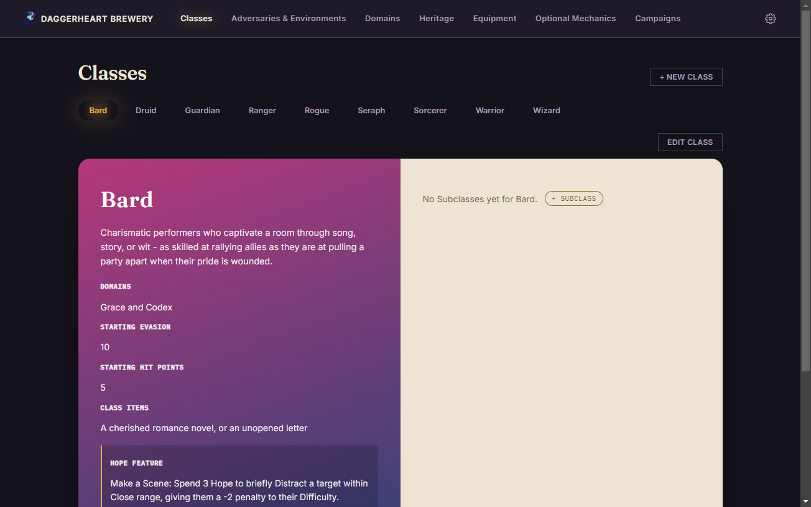
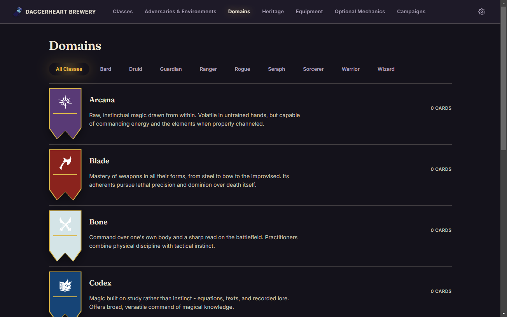
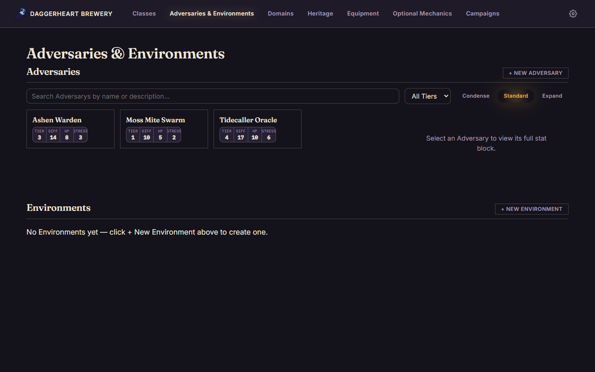
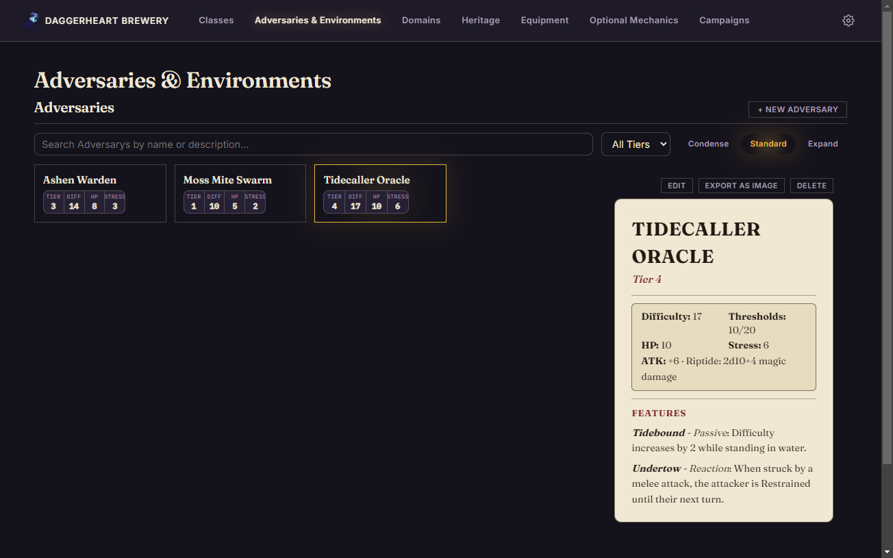
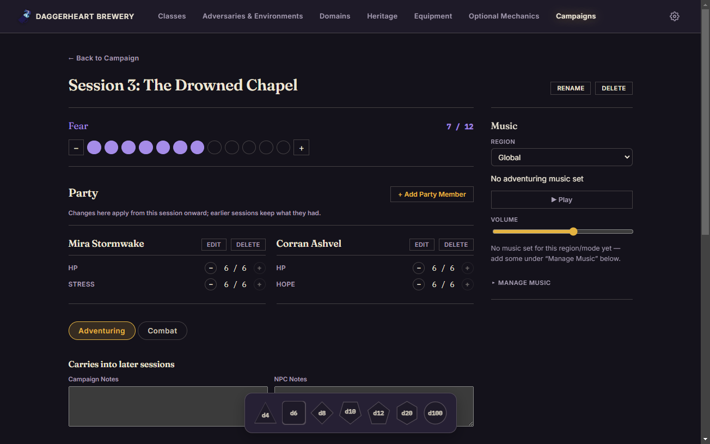
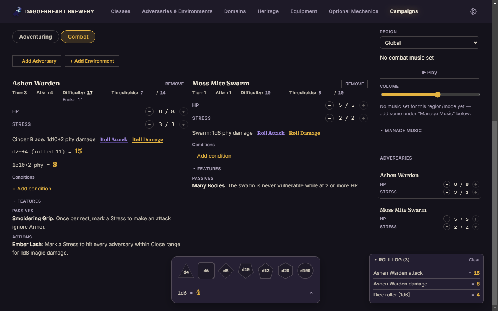
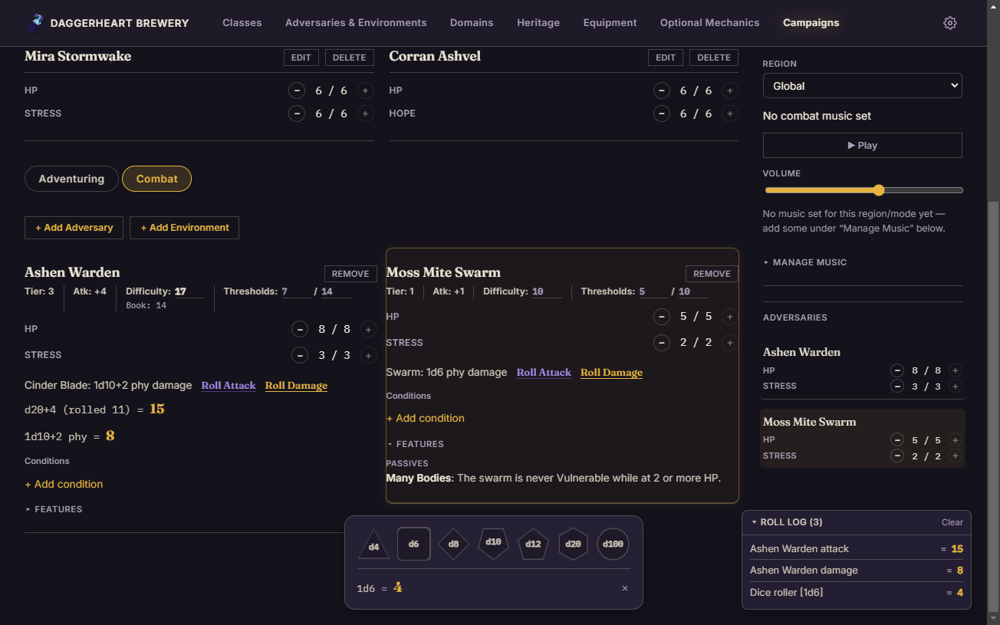
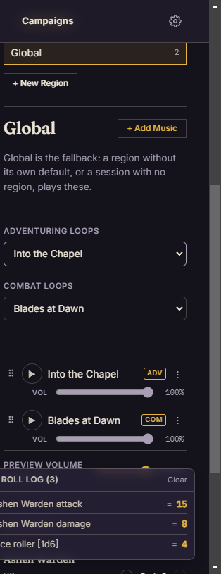

Author every content type
Classes, Subclasses, and Domains and their Cards are built with the same validated forms as everything else — pick a Class to see its Subclasses and the two Domains it draws from, or browse a Domain's own card-shaped tile grid.


Book-style stat sheets
Adversaries and Environments browse as a dense tile gallery with search and a Tier filter, and selecting one opens a full parchment stat sheet — Difficulty, Thresholds, an Attack Modifier, and every Feature grouped by Passive, Action, and Reaction — ready to export as a PNG.


Run a live session
The Party sits above two tabs — Adventuring for notes and loot rolls, Combat for the fight itself. Pulling in an Adversary snapshots it so a GM's own Difficulty/Threshold overrides never touch the book record, which stays visible underneath as a reference. Roll Attack and Roll Damage both feed a running Roll Log, and a floating Dice Tray handles everything else. Clicking an Adversary in the condensed sidebar spotlights its full tile below — closing every other tile's Features, opening its own, and fading the highlight a few seconds later.



Music, without leaving the session
A collapsible "Manage Music" panel lives right next to playback in the session sidebar — upload, file into a region, and set a default for each mode without ever leaving the table. The standalone Music tab adds a library overview, region browsing, and search for setting things up ahead of time.
